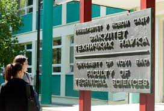

Fakultet Tehničkih nauka
Trg Dositeja Obradovića 6, Novi Sad
Fakultet tehničkih nauka je jedna od najsavremenije organizovanih visokoobrazovnih institucija u regionu sa tradicijom dugom preko šest decenija, poznat i priznat u celom svetu, a inženjeri obrazovani na ovom Fakultetu, rade i postižu zapažene rezultate u svakom preduzeću koje ima veze sa tehnologijom, proizvodnjom,
obrazovanjem ili uslugama, jer od svih zanimanja koja se u našoj zemlji obrazuju, tehnika je i dalje najtraženija.
ĐORĐE PRŽULJ
przulj@gmail.com
Diplomirao na Univerzitetu u Novom Sadu, Fakultet tehničkih nauka, mašinski odsek, smer za informaciono-upravljačke sisteme 1999. godine (prosečna ocena 8,15).
Magistrirao na Univerzitetu u Novom Sadu, Fakultet tehničkih nauka, smer za telematiku, informacione i komunikacione sisteme 2004. godine (prosečna ocena 9,50).
Doktorsku disertaciju pod nazivom „Servisno orijentisana arhitektura katastarskog informacionog sistema“ odbranio 2013. godine na Fakultetu tehničkih nauka Univerziteta u Novom Sadu.

VALDIMIR FABRI
vladimir_fabri98@uns.ac.rs
Upisao osnovne akademske studije Fakulteta tehničkih nauka 2017. godine, smer inženjerski menadžment. Diplomirao je sa prosečnom ocenom 9,70 i odbranio diplomski rad na temu „Implementacija jedinstvenih i integracionih testova u Spring boot aplikaciji“ 30.09.2021. sa ocenom 10. Iste godine Vladimir je upisao master studije inženjerskog menadžmenta, modul informacioni menadžment, i zaposlio se na Fakultetu tehničkih nauka kao saradnik u nastavi za predmet objektivno orijentisane (informacione tehnologije).